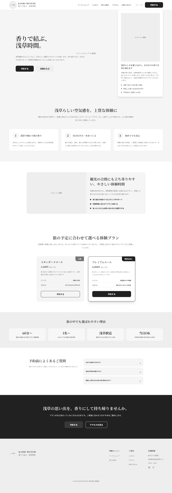
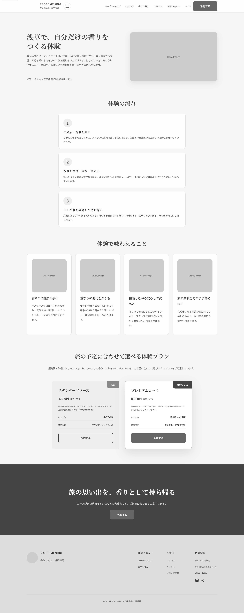
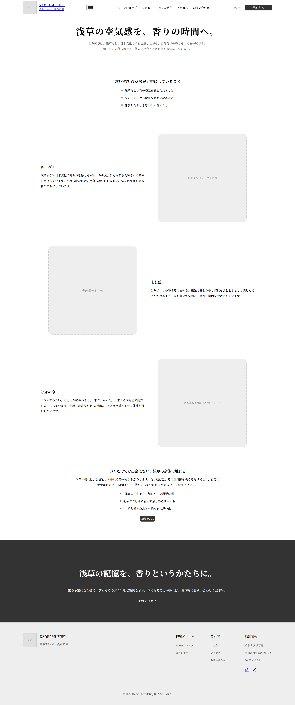
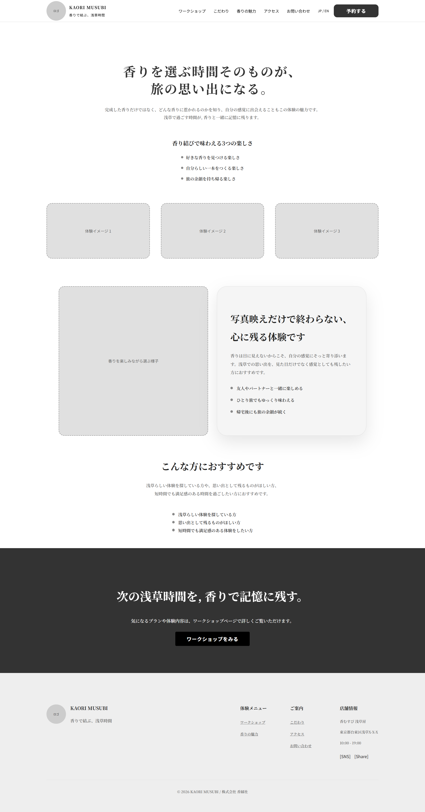
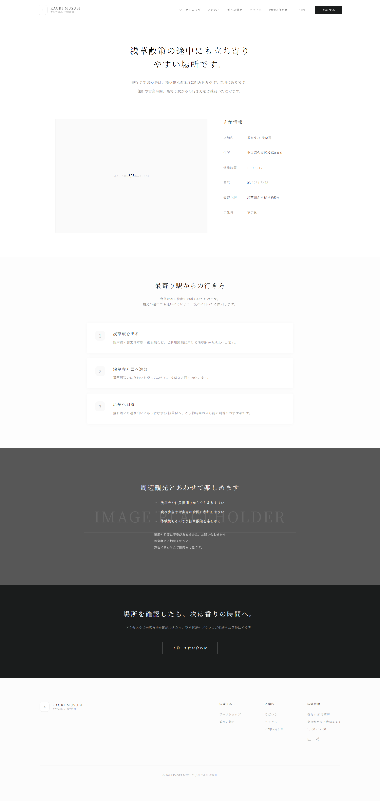
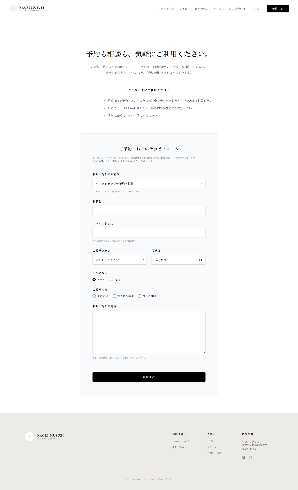

ワイヤーフレーム
ワイヤーフレーム作成方法
トップページ

ファーストビューでは、キャッチコピーと基本情報、予約ボタンをまとめて配置し、体験内容と予約導線をすぐ理解できるようにしています。
メインビジュアルは、香り結びの世界観や雰囲気を直感的に伝え、体験への期待感を高める役割があります。
概要エリアでは、サービスの魅力を簡潔に伝え、興味を深めてもらう構成にしています。
特徴セクションは、浅草らしさ、オーダーメイド性、予約のしやすさといった強みを分かりやすく整理するために配置しています。
シーン紹介は、利用イメージを具体化し、自分に合った体験として想像しやすくするための構成です。
コース案内は、料金や内容、所要時間を比較しやすく見せ、予約時の迷いを減らす役割があります。
口コミや実績は、初めて利用する人の不安をやわらげ、安心感につなげるために配置しています。
ページ下部のCTAは、閲覧後に自然に予約へ進めるようにするための導線です。
下層ページ
（ここに各下層ページのワイヤーフレーム画像と説明を配置）
【Worksページ】

配置意図：作品一覧を見やすく整理し、各制作物の概要や特徴がひと目で伝わるように構成した。上部でページの目的が分かるようにし、その下に作品を順に確認できるレイアウトにすることで、閲覧者が興味のある制作物を探しやすいようにしている。
【Aboutページ】

配置意図：プロフィールや活動内容を分かりやすく伝え、閲覧者が制作者の人物像や強みを自然に理解できるように構成した。上部でページの目的が伝わるようにし、その下に自己紹介や経歴、特徴を順に配置することで、内容を無理なく読み進められるレイアウトにしている。
【Skillsページ】

配置意図：習得しているスキルや使用できる技術を見やすく整理し、閲覧者が得意分野や対応可能な内容をひと目で把握できるように構成した。上部でページの目的が伝わるようにし、その下にスキル情報を分類しながら配置することで、内容を比較しやすく、理解しやすいレイアウトにしている。
【Accessページ】

配置意図：店舗の所在地やアクセス方法を分かりやすく伝え、初めて訪れる人でも迷わず来店できるように構成した。上部でページの目的が伝わるようにし、その下に住所、最寄り駅、地図、案内情報を順に配置することで、必要な情報を確認しやすいレイアウトにしている。
【Contactページ】

配置意図：問い合わせ方法を分かりやすく案内し、閲覧者が迷わず連絡できるように構成した。上部でページの目的が伝わるようにし、その下に必要事項の入力欄や案内を順に配置することで、入力の流れが分かりやすく、安心して利用できるレイアウトにしている。
Webアプリケーション画面
（ここにWebアプリ画面のワイヤーフレーム画像を配置）
スマートフォン版
（ここにスマートフォン版のワイヤーフレーム画像を配置）